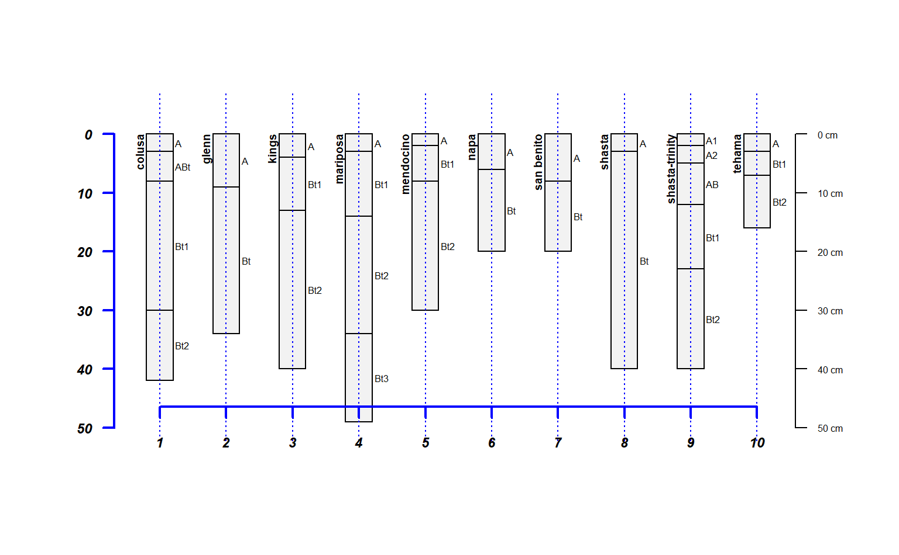
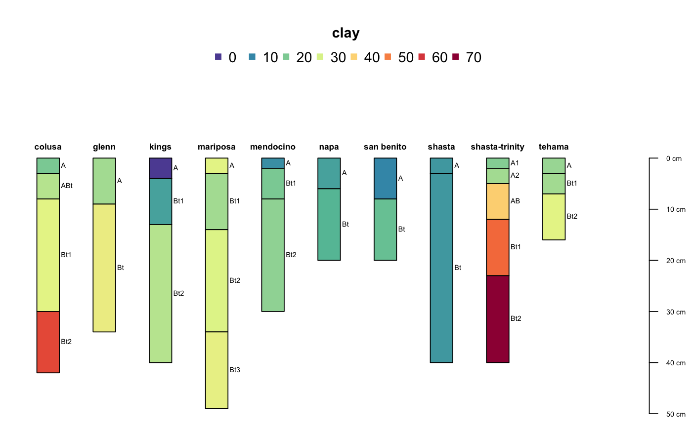
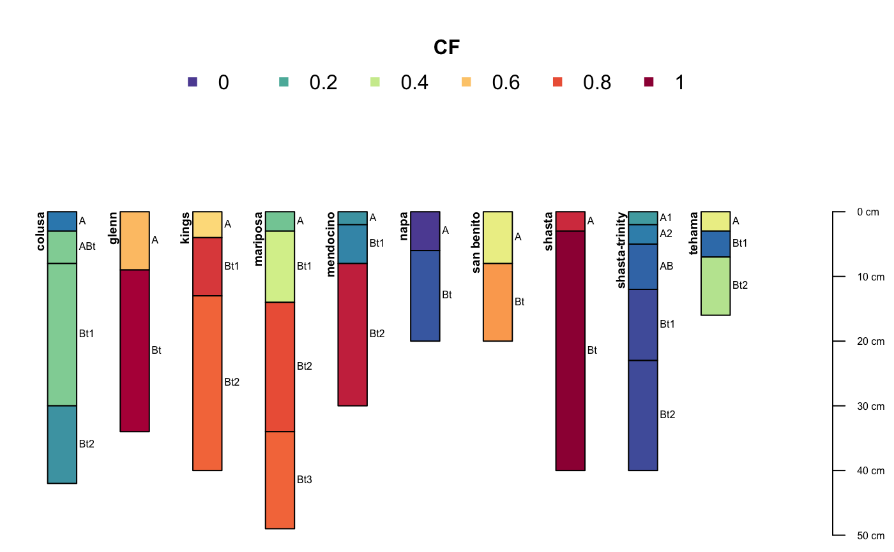
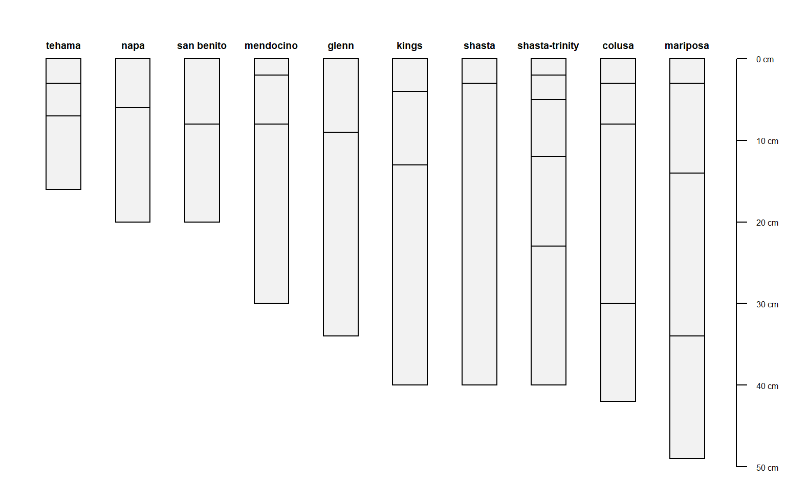

Soil Chemical Data from Serpentinitic Soils of California
A data frame with 30 observations on the following 13 variables.
site name
horizon designation
horizon top boundary in cm
horizon bottom boundary in cm
exchangeable K in c mol/kg
exchangeable Mg in cmol/kg
exchangeable Ca in cmol/kg
cation exchange capacity (NH4OAc at pH 7)
extractable Ca:Mg ratio
sand content by weight percentage
silt content by weight percentage
clay content by weight percentage
>2mm fraction by volume percentage
https://www.soils.org/publications/sssaj/articles/73/6/2087
Selected soil physical and chemical data from (McGahan et al., 2009).
McGahan, D.G., Southard, R.J, Claassen, V.P. 2009. Plant-Available Calcium Varies Widely in Soils on Serpentinite Landscapes. Soil Sci. Soc. Am. J. 73: 2087-2095.
# load sample data set, a simple data.frame object with horizon-level data from 10 profiles library(aqp) data(sp4) str(sp4)#> 'data.frame': 30 obs. of 13 variables: #> $ id : chr "colusa" "colusa" "colusa" "colusa" ... #> $ name : chr "A" "ABt" "Bt1" "Bt2" ... #> $ top : int 0 3 8 30 0 9 0 4 13 0 ... #> $ bottom : int 3 8 30 42 9 34 4 13 40 6 ... #> $ K : num 0.3 0.2 0.1 0.1 0.2 0.3 0.2 0.6 0.8 0.4 ... #> $ Mg : num 25.7 23.7 23.2 44.3 21.9 18.9 12.1 12.1 17.7 16.4 ... #> $ Ca : num 9 5.6 1.9 0.3 4.4 4.5 1.4 7 4.4 24.1 ... #> $ CEC_7 : num 23 21.4 23.7 43 18.8 27.5 23.7 18 20 31.1 ... #> $ ex_Ca_to_Mg: num 0.35 0.23 0.08 0.01 0.2 0.2 0.58 0.51 0.25 1.47 ... #> $ sand : int 46 42 40 27 54 49 43 36 27 43 ... #> $ silt : int 33 31 28 18 20 18 55 49 45 42 ... #> $ clay : int 21 27 32 55 25 34 3 15 27 15 ... #> $ CF : num 0.12 0.27 0.27 0.16 0.55 0.84 0.5 0.75 0.67 0.02 ...sp4$idbak <- sp4$id #sp4 <- sp4[order(match(sp4$id, aqp:::.coalesce.idx(sort(sp4$id))), sp4$top),] # upgrade to SoilProfileCollection # 'id' is the name of the column containing the profile ID # 'top' is the name of the column containing horizon upper boundaries # 'bottom' is the name of the column containing horizon lower boundaries depths(sp4) <- id ~ top + bottom # check it out class(sp4) # class name#> [1] "SoilProfileCollection" #> attr(,"package") #> [1] "aqp"#> Formal class 'SoilProfileCollection' [package "aqp"] with 9 slots #> ..@ idcol : chr "id" #> ..@ hzidcol : chr "hzID" #> ..@ depthcols : chr [1:2] "top" "bottom" #> ..@ metadata :List of 7 #> .. ..$ aqp_df_class : chr "data.frame" #> .. ..$ aqp_group_by : chr "" #> .. ..$ aqp_hzdesgn : chr "" #> .. ..$ aqp_hztexcl : chr "" #> .. ..$ depth_units : chr "cm" #> .. ..$ stringsAsFactors: logi FALSE #> .. ..$ original.order : int [1:30] 1 2 3 4 5 6 7 8 9 10 ... #> ..@ horizons :'data.frame': 30 obs. of 15 variables: #> .. ..$ id : chr [1:30] "colusa" "colusa" "colusa" "colusa" ... #> .. ..$ name : chr [1:30] "A" "ABt" "Bt1" "Bt2" ... #> .. ..$ top : int [1:30] 0 3 8 30 0 9 0 4 13 0 ... #> .. ..$ bottom : int [1:30] 3 8 30 42 9 34 4 13 40 3 ... #> .. ..$ K : num [1:30] 0.3 0.2 0.1 0.1 0.2 0.3 0.2 0.6 0.8 0.6 ... #> .. ..$ Mg : num [1:30] 25.7 23.7 23.2 44.3 21.9 18.9 12.1 12.1 17.7 28.3 ... #> .. ..$ Ca : num [1:30] 9 5.6 1.9 0.3 4.4 4.5 1.4 7 4.4 5.8 ... #> .. ..$ CEC_7 : num [1:30] 23 21.4 23.7 43 18.8 27.5 23.7 18 20 29.3 ... #> .. ..$ ex_Ca_to_Mg: num [1:30] 0.35 0.23 0.08 0.01 0.2 0.2 0.58 0.51 0.25 0.2 ... #> .. ..$ sand : int [1:30] 46 42 40 27 54 49 43 36 27 42 ... #> .. ..$ silt : int [1:30] 33 31 28 18 20 18 55 49 45 26 ... #> .. ..$ clay : int [1:30] 21 27 32 55 25 34 3 15 27 32 ... #> .. ..$ CF : num [1:30] 0.12 0.27 0.27 0.16 0.55 0.84 0.5 0.75 0.67 0.25 ... #> .. ..$ idbak : chr [1:30] "colusa" "colusa" "colusa" "colusa" ... #> .. ..$ hzID : chr [1:30] "1" "2" "3" "4" ... #> ..@ site :'data.frame': 10 obs. of 1 variable: #> .. ..$ id: chr [1:10] "colusa" "glenn" "kings" "mariposa" ... #> ..@ sp :Formal class 'SpatialPoints' [package "sp"] with 3 slots #> .. .. ..@ coords : num [1, 1] 0 #> .. .. ..@ bbox : logi [1, 1] NA #> .. .. ..@ proj4string:Formal class 'CRS' [package "sp"] with 1 slot #> .. .. .. .. ..@ projargs: chr NA #> ..@ diagnostic :'data.frame': 0 obs. of 0 variables #> ..@ restrictions:'data.frame': 0 obs. of 0 variables#> nSites relativeOrder valid #> 1 TRUE TRUE TRUE#> id valid depthLogic sameDepth missingDepth overlapOrGap #> 1 colusa TRUE FALSE FALSE FALSE FALSE #> 2 glenn TRUE FALSE FALSE FALSE FALSE #> 3 kings TRUE FALSE FALSE FALSE FALSE #> 4 mariposa TRUE FALSE FALSE FALSE FALSE #> 5 mendocino TRUE FALSE FALSE FALSE FALSE #> 6 napa TRUE FALSE FALSE FALSE FALSE #> 7 san benito TRUE FALSE FALSE FALSE FALSE #> 8 shasta TRUE FALSE FALSE FALSE FALSE #> 9 shasta-trinity TRUE FALSE FALSE FALSE FALSE #> 10 tehama TRUE FALSE FALSE FALSE FALSE#> [1] "id"#> [1] "top" "bottom"#> [1] "cm"#> $aqp_df_class #> [1] "data.frame" #> #> $aqp_group_by #> [1] "" #> #> $aqp_hzdesgn #> [1] "" #> #> $aqp_hztexcl #> [1] "" #> #> $depth_units #> [1] "cm" #> #> $stringsAsFactors #> [1] FALSE #> #> $original.order #> [1] 1 2 3 4 5 6 7 8 9 10 11 12 13 14 15 16 17 18 19 20 21 22 23 24 25 #> [26] 26 27 28 29 30 #># alter the depth unit metadata depth_units(sp4) <- 'inches' # units are really 'cm' # more generic interface for adjusting metadata # add attributes to metadata list metadata(sp4)$describer <- 'DGM' metadata(sp4)$date <- as.Date('2009-01-01') metadata(sp4)$citation <- 'McGahan, D.G., Southard, R.J, Claassen, V.P. 2009. Plant-Available Calcium Varies Widely in Soils on Serpentinite Landscapes. Soil Sci. Soc. Am. J. 73: 2087-2095.' depth_units(sp4) <- 'cm' # fix depth units, back to 'cm' # further inspection with common function overloads length(sp4) # number of profiles in the collection#> [1] 10#> [1] 30#> horizons1 horizons2 horizons3 horizons4 horizons5 #> "id" "name" "top" "bottom" "K" #> horizons6 horizons7 horizons8 horizons9 horizons10 #> "Mg" "Ca" "CEC_7" "ex_Ca_to_Mg" "sand" #> horizons11 horizons12 horizons13 horizons14 horizons15 #> "silt" "clay" "CF" "idbak" "hzID"#> [1] 16#> [1] 49#> [1] "colusa" "glenn" "kings" "mariposa" #> [5] "mendocino" "napa" "san benito" "shasta" #> [9] "shasta-trinity" "tehama"#> id name top bottom K Mg Ca CEC_7 ex_Ca_to_Mg sand silt #> 1 colusa A 0 3 0.3 25.7 9.0 23.0 0.35 46 33 #> 2 colusa ABt 3 8 0.2 23.7 5.6 21.4 0.23 42 31 #> 3 colusa Bt1 8 30 0.1 23.2 1.9 23.7 0.08 40 28 #> 4 colusa Bt2 30 42 0.1 44.3 0.3 43.0 0.01 27 18 #> 5 glenn A 0 9 0.2 21.9 4.4 18.8 0.20 54 20 #> 6 glenn Bt 9 34 0.3 18.9 4.5 27.5 0.20 49 18 #> 7 kings A 0 4 0.2 12.1 1.4 23.7 0.58 43 55 #> 8 kings Bt1 4 13 0.6 12.1 7.0 18.0 0.51 36 49 #> 9 kings Bt2 13 40 0.8 17.7 4.4 20.0 0.25 27 45 #> 10 mariposa A 0 3 0.6 28.3 5.8 29.3 0.20 42 26 #> 11 mariposa Bt1 3 14 0.4 33.7 6.2 27.9 0.18 41 34 #> 12 mariposa Bt2 14 34 0.3 44.3 6.2 34.1 0.14 36 33 #> 13 mariposa Bt3 34 49 0.1 78.2 4.4 43.6 0.06 36 31 #> 14 mendocino A 0 2 0.5 12.8 2.2 19.3 0.18 57 30 #> 15 mendocino Bt1 2 8 0.2 27.1 3.4 19.8 0.13 51 28 #> 16 mendocino Bt2 8 30 0.2 30.5 3.7 22.9 0.12 51 26 #> 17 napa A 0 6 0.4 16.4 24.1 31.1 1.47 43 42 #> 18 napa Bt 6 20 0.1 16.2 21.5 27.9 1.32 54 29 #> 19 san benito A 0 8 NA 3.0 0.7 3.1 0.24 80 8 #> 20 san benito Bt 8 20 0.0 0.1 5.6 5.6 0.11 74 7 #> 21 shasta A 0 3 0.3 9.7 3.5 13.2 0.36 37 49 #> 22 shasta Bt 3 40 0.2 10.1 2.0 12.2 0.20 39 46 #> 23 shasta-trinity A1 0 2 0.2 18.8 6.6 23.0 0.35 34 44 #> 24 shasta-trinity A2 2 5 0.2 25.5 4.1 21.5 0.16 33 42 #> 25 shasta-trinity AB 5 12 0.3 29.3 3.5 29.6 0.12 24 36 #> 26 shasta-trinity Bt1 12 23 0.2 30.3 1.5 26.5 0.05 20 29 #> 27 shasta-trinity Bt2 23 40 0.1 64.9 0.8 48.7 0.01 11 22 #> 28 tehama A 0 3 0.4 12.4 16.3 40.2 1.31 57 19 #> 29 tehama Bt1 3 7 0.5 20.2 16.5 32.7 0.82 55 20 #> 30 tehama Bt2 7 16 0.2 27.7 13.7 30.0 0.50 51 17 #> clay CF idbak hzID #> 1 21 0.12 colusa 1 #> 2 27 0.27 colusa 2 #> 3 32 0.27 colusa 3 #> 4 55 0.16 colusa 4 #> 5 25 0.55 glenn 5 #> 6 34 0.84 glenn 6 #> 7 3 0.50 kings 7 #> 8 15 0.75 kings 8 #> 9 27 0.67 kings 9 #> 10 32 0.25 mariposa 10 #> 11 25 0.38 mariposa 11 #> 12 31 0.71 mariposa 12 #> 13 33 0.67 mariposa 13 #> 14 13 0.16 mendocino 14 #> 15 21 0.14 mendocino 15 #> 16 23 0.80 mendocino 16 #> 17 15 0.02 napa 17 #> 18 17 0.07 napa 18 #> 19 12 0.43 san benito 19 #> 20 19 0.60 san benito 20 #> 21 14 0.78 shasta 21 #> 22 14 0.88 shasta 22 #> 23 22 0.17 shasta-trinity 23 #> 24 25 0.13 shasta-trinity 24 #> 25 40 0.09 shasta-trinity 25 #> 26 51 0.05 shasta-trinity 26 #> 27 67 0.05 shasta-trinity 27 #> 28 24 0.43 tehama 28 #> 29 25 0.10 tehama 29 #> 30 32 0.34 tehama 30# extraction of specific horizon attributes sp4$clay # vector of clay content#> [1] 21 27 32 55 25 34 3 15 27 32 25 31 33 13 21 23 15 17 12 19 14 14 22 25 40 #> [26] 51 67 24 25 32# subsetting SoilProfileCollection objects sp4[1, ] # first profile in the collection#> SoilProfileCollection with 1 profiles and 4 horizons #> profile ID: id | horizon ID: hzID #> Depth range: 42 - 42 cm #> #> ----- Horizons (4 / 4 rows | 10 / 15 columns) ----- #> id hzID top bottom name K Mg Ca CEC_7 ex_Ca_to_Mg #> colusa 1 0 3 A 0.3 25.7 9.0 23.0 0.35 #> colusa 2 3 8 ABt 0.2 23.7 5.6 21.4 0.23 #> colusa 3 8 30 Bt1 0.1 23.2 1.9 23.7 0.08 #> colusa 4 30 42 Bt2 0.1 44.3 0.3 43.0 0.01 #> #> ----- Sites (1 / 1 rows | 1 / 1 columns) ----- #> id #> colusa #> #> Spatial Data: #> [,1] #> [1,] NA #> CRS: NAsp4[, 1] # first horizon from each profile#> SoilProfileCollection with 10 profiles and 10 horizons #> profile ID: id | horizon ID: hzID #> Depth range: 2 - 9 cm #> #> ----- Horizons (6 / 10 rows | 10 / 15 columns) ----- #> id hzID top bottom name K Mg Ca CEC_7 ex_Ca_to_Mg #> colusa 1 0 3 A 0.3 25.7 9.0 23.0 0.35 #> glenn 5 0 9 A 0.2 21.9 4.4 18.8 0.20 #> kings 7 0 4 A 0.2 12.1 1.4 23.7 0.58 #> mariposa 10 0 3 A 0.6 28.3 5.8 29.3 0.20 #> mendocino 14 0 2 A 0.5 12.8 2.2 19.3 0.18 #> napa 17 0 6 A 0.4 16.4 24.1 31.1 1.47 #> [... more horizons ...] #> #> ----- Sites (6 / 10 rows | 1 / 1 columns) ----- #> id #> colusa #> glenn #> kings #> mariposa #> mendocino #> napa #> [... more sites ...] #> #> Spatial Data: #> [EMPTY]# inspect plotting area, very simple to overlay graphical elements abline(v=1:length(sp4), lty=3, col='blue')# profiles are centered at integers, from 1 to length(obj) axis(1, line=-1.5, at=1:10, cex.axis=0.75, font=4, col='blue', lwd=2)# y-axis is based on profile depths axis(2, line=-1, at=pretty(1:max(sp4)), cex.axis=0.75, font=4, las=1, col='blue', lwd=2)# apply a function to each profile, returning a single value per profile, # in the same order as profile_id(sp4) soil.depths <- profileApply(sp4, max) # recall that max() gives the depth of a soil profile # check that the order is correct all.equal(names(soil.depths), profile_id(sp4))#> [1] TRUE# a vector of values that is the same length as the number of profiles # can be stored into site-level data sp4$depth <- soil.depths # check: looks good max(sp4[1, ]) == sp4$depth[1]#> [1] TRUE#> id depth #> 1 colusa 42 #> 2 glenn 34 #> 3 kings 40 #> 4 mariposa 49 #> 5 mendocino 30 #> 6 napa 20 #> 7 san benito 20 #> 8 shasta 40 #> 9 shasta-trinity 40 #> 10 tehama 16sp4$depth # specific columns as a vector#> [1] 42 34 40 49 30 20 20 40 40 16# use site-level data to alter plotting order new.order <- order(sp4$depth) # the result is an index of rank par(mar=c(0,0,0,0)) plot(sp4, plot.order=new.order)#> id name top bottom K Mg Ca CEC_7 ex_Ca_to_Mg sand silt #> 1 colusa A 0 3 0.3 25.7 9.0 23.0 0.35 46 33 #> 2 colusa ABt 3 8 0.2 23.7 5.6 21.4 0.23 42 31 #> 3 colusa Bt1 8 30 0.1 23.2 1.9 23.7 0.08 40 28 #> 4 colusa Bt2 30 42 0.1 44.3 0.3 43.0 0.01 27 18 #> 5 glenn A 0 9 0.2 21.9 4.4 18.8 0.20 54 20 #> 6 glenn Bt 9 34 0.3 18.9 4.5 27.5 0.20 49 18 #> 7 kings A 0 4 0.2 12.1 1.4 23.7 0.58 43 55 #> 8 kings Bt1 4 13 0.6 12.1 7.0 18.0 0.51 36 49 #> 9 kings Bt2 13 40 0.8 17.7 4.4 20.0 0.25 27 45 #> 10 mariposa A 0 3 0.6 28.3 5.8 29.3 0.20 42 26 #> 11 mariposa Bt1 3 14 0.4 33.7 6.2 27.9 0.18 41 34 #> 12 mariposa Bt2 14 34 0.3 44.3 6.2 34.1 0.14 36 33 #> 13 mariposa Bt3 34 49 0.1 78.2 4.4 43.6 0.06 36 31 #> 14 mendocino A 0 2 0.5 12.8 2.2 19.3 0.18 57 30 #> 15 mendocino Bt1 2 8 0.2 27.1 3.4 19.8 0.13 51 28 #> 16 mendocino Bt2 8 30 0.2 30.5 3.7 22.9 0.12 51 26 #> 17 napa A 0 6 0.4 16.4 24.1 31.1 1.47 43 42 #> 18 napa Bt 6 20 0.1 16.2 21.5 27.9 1.32 54 29 #> 19 san benito A 0 8 NA 3.0 0.7 3.1 0.24 80 8 #> 20 san benito Bt 8 20 0.0 0.1 5.6 5.6 0.11 74 7 #> 21 shasta A 0 3 0.3 9.7 3.5 13.2 0.36 37 49 #> 22 shasta Bt 3 40 0.2 10.1 2.0 12.2 0.20 39 46 #> 23 shasta-trinity A1 0 2 0.2 18.8 6.6 23.0 0.35 34 44 #> 24 shasta-trinity A2 2 5 0.2 25.5 4.1 21.5 0.16 33 42 #> 25 shasta-trinity AB 5 12 0.3 29.3 3.5 29.6 0.12 24 36 #> 26 shasta-trinity Bt1 12 23 0.2 30.3 1.5 26.5 0.05 20 29 #> 27 shasta-trinity Bt2 23 40 0.1 64.9 0.8 48.7 0.01 11 22 #> 28 tehama A 0 3 0.4 12.4 16.3 40.2 1.31 57 19 #> 29 tehama Bt1 3 7 0.5 20.2 16.5 32.7 0.82 55 20 #> 30 tehama Bt2 7 16 0.2 27.7 13.7 30.0 0.50 51 17 #> clay CF idbak hzID depth #> 1 21 0.12 colusa 1 42 #> 2 27 0.27 colusa 2 42 #> 3 32 0.27 colusa 3 42 #> 4 55 0.16 colusa 4 42 #> 5 25 0.55 glenn 5 34 #> 6 34 0.84 glenn 6 34 #> 7 3 0.50 kings 7 40 #> 8 15 0.75 kings 8 40 #> 9 27 0.67 kings 9 40 #> 10 32 0.25 mariposa 10 49 #> 11 25 0.38 mariposa 11 49 #> 12 31 0.71 mariposa 12 49 #> 13 33 0.67 mariposa 13 49 #> 14 13 0.16 mendocino 14 30 #> 15 21 0.14 mendocino 15 30 #> 16 23 0.80 mendocino 16 30 #> 17 15 0.02 napa 17 20 #> 18 17 0.07 napa 18 20 #> 19 12 0.43 san benito 19 20 #> 20 19 0.60 san benito 20 20 #> 21 14 0.78 shasta 21 40 #> 22 14 0.88 shasta 22 40 #> 23 22 0.17 shasta-trinity 23 40 #> 24 25 0.13 shasta-trinity 24 40 #> 25 40 0.09 shasta-trinity 25 40 #> 26 51 0.05 shasta-trinity 26 40 #> 27 67 0.05 shasta-trinity 27 40 #> 28 24 0.43 tehama 28 16 #> 29 25 0.10 tehama 29 16 #> 30 32 0.34 tehama 30 16